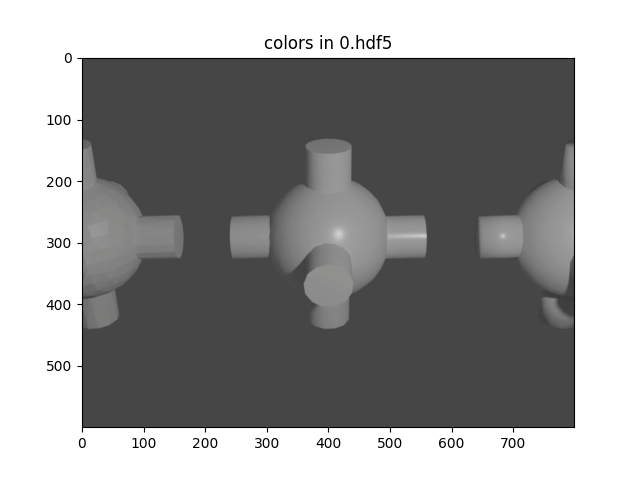
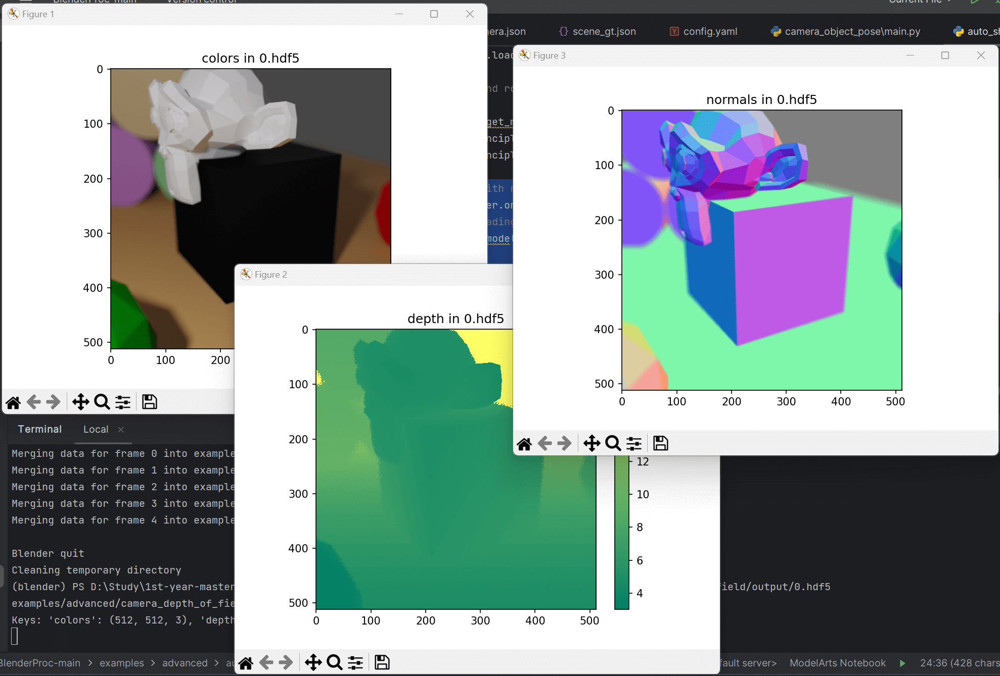
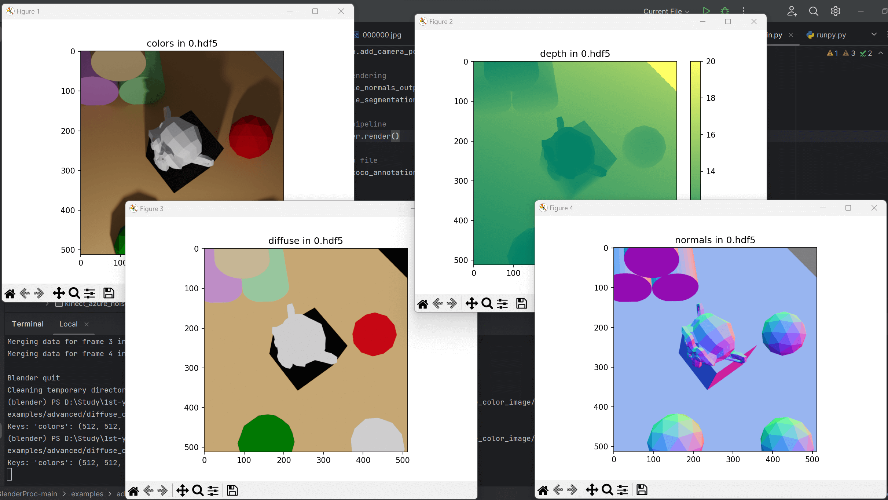
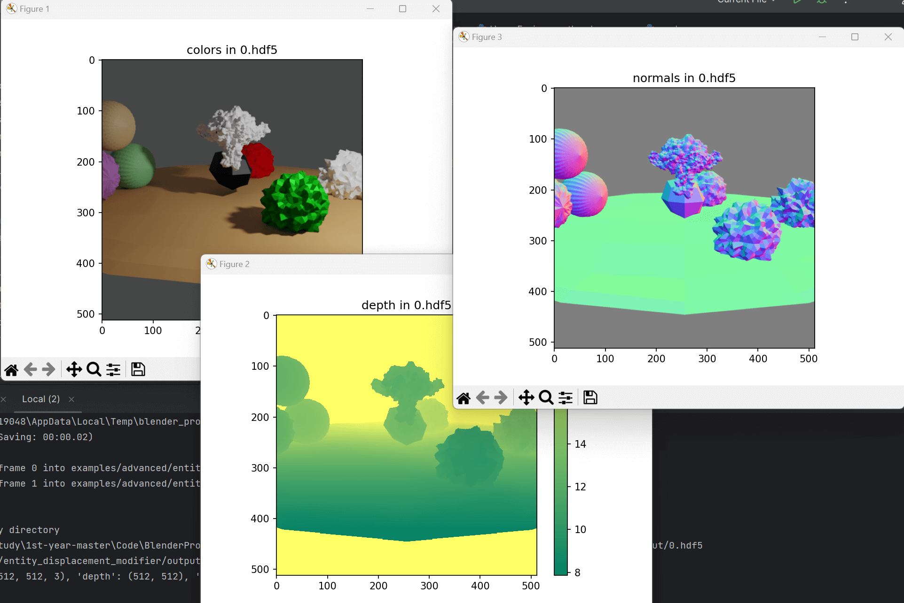
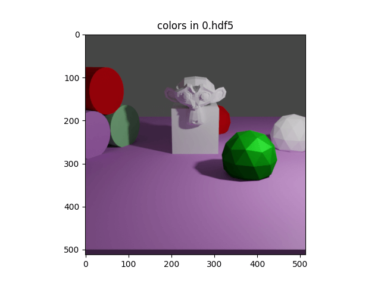
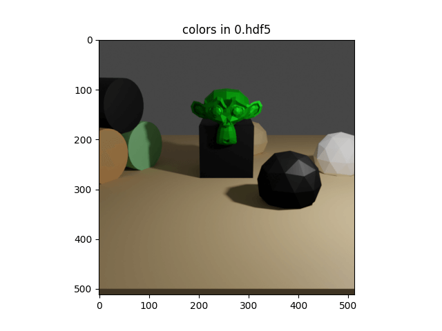
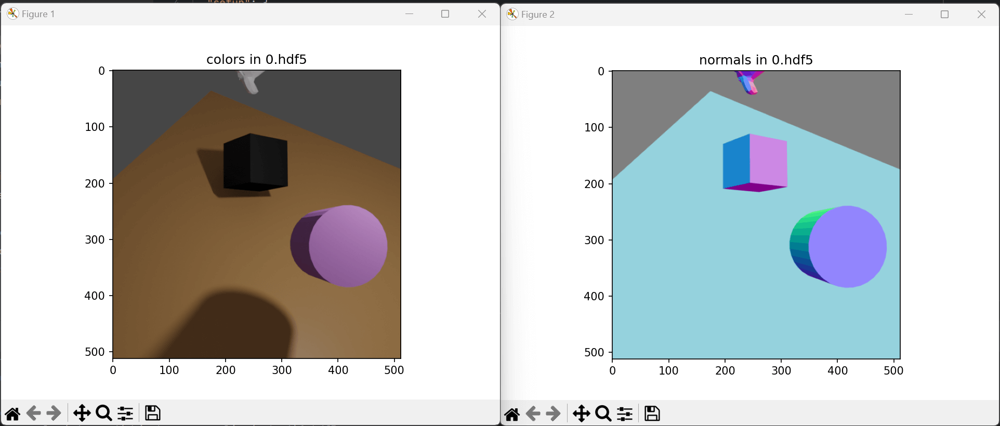
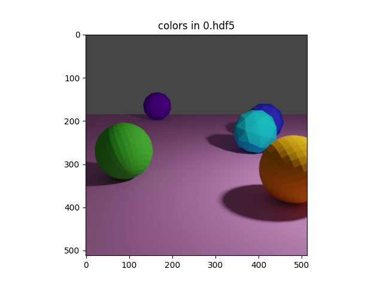
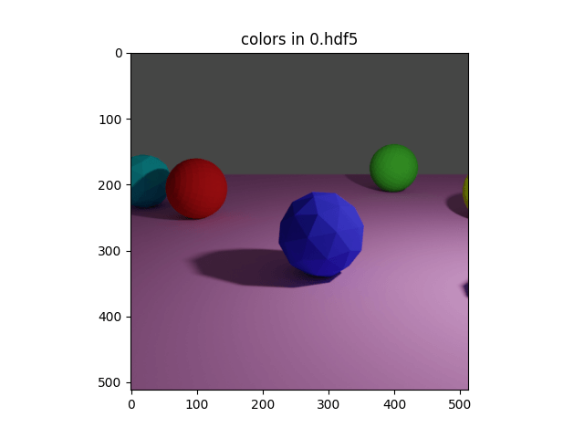
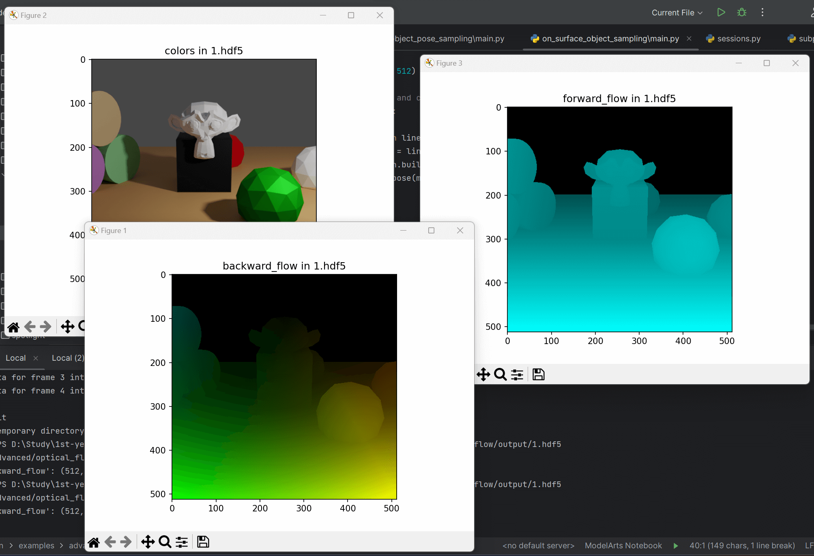

blenderproc run examples/advanced/auto_shading/main.py examples/advanced/auto_shading/camera_position examples/advanced/auto_shading/scene.blend examples/advanced/auto_shading/output
examples/advanced/auto_shading/main.py: path to the main python file to run.
examples/advanced/auto_shading/camera_position: text file with parameters of camera positions.
examples/advanced/auto_shading/scene.blend: path to the blend file with the basic scene.
examples/advanced/auto_shading/output: path to the output directory.
Visualization
1
blenderproc vis hdf5 examples/advanced/auto_shading/output/0.hdf5

Code
1 2 3 4 5 6 7 8 9
# Find the object with name "Sphere" sphere = bproc.filter.one_by_attr(objs, "name", "Sphere") # Set it to AUTO shading, so all angles greater than 45 degrees will be shaded flat. sphere.set_shading_mode("auto", 45)
# Find the object with name "Sphere.001" other_sphere = bproc.filter.one_by_attr(objs, "name", "Sphere.001") # Set it to smooth shading, so all angles will be shaded flat. other_sphere.set_shading_mode("smooth")
blenderproc run examples/advanced/camera_depth_of_field/main.py examples/resources/scene.obj examples/advanced/camera_depth_of_field/output
examples/advanced/camera_depth_of_field/main.py: path to the main python file to run.
examples/resources/scene.obj: path to the object file with the basic scene.
examples/advanced/camera_depth_of_field/output: path to the output directory.
Visualization
1
blenderproc vis hdf5 examples/advanced/camera_depth_of_field/output/0.hdf5

Code
设置视点：
1 2 3
# Create an empty object which will represent the cameras focus point focus_point = bproc.object.create_empty("Camera Focus Point") focus_point.set_location([0.5, -1.5, 3])
1 2 3 4
# define the camera intrinsics bproc.camera.set_resolution(512, 512) # Set the empty object as focus point and set fstop to regulate the sharpness of the scene bproc.camera.add_depth_of_field(focus_point, fstop_value=0.25)
blenderproc vis coco -i 1 -c coco_annotations.json -b examples/advanced/coco_annotations/output/coco_data
然后你就会喜提报错：
1 2 3 4
AttributeError: module 'numpy' has no attribute 'bool'. `np.bool` was a deprecated alias for the builtin `bool`. To avoid this error in existing code, use `bool` by itself. Doing this will not modify any behavior and is safe. If you specifically wanted the numpy scalar type, use `np.bool_` here. The aliases was originally deprecated in NumPy 1.20; for more details and guidance see the original release note at: https://numpy.org/devdocs/release/1.20.0-notes.html#deprecations. Did you mean: 'bool_'?
# 对传入的三个可选参数进行类型检查和处理，确保它们都是列表类型。如果为 None，就改为空列表 instance_segmaps = [] if instance_segmaps isNoneelselist(instance_segmaps) colors = [] if colors isNoneelselist(colors) #（怎么代码风格跟上面的不太一样？） if instance_attribute_maps isNone: instance_attribute_maps = []
# 检查 colors[0] 是否是四维数组，如果是，则抛出 ValueError 异常。这是因为 BlenderProc 目前不支持渲染立体图像，只能生成左右视图分别的图像/分割图像。 iflen(colors) > 0andlen(colors[0].shape) == 4: raise ValueError("BlenderProc currently does not support writing coco annotations for stereo images. " "However, you can enter left and right images / segmaps separately.")
# 这些代码块用于查找渲染时生成的 RGB 图像、实例分割图像和属性映射文件的路径 ifnot instance_segmaps: # 如果 instance_segmaps 列表是空的，则该代码会查找实例分割图像的路径，使用 Utility.find_registered_output_by_key() 方法查找已注册的输出 # Find path pattern of segmentation images segmentation_map_output = Utility.find_registered_output_by_key(segmap_output_key) if segmentation_map_output isNone: # 如果找不到 key 为 segmap_output_key 的输出，则引发 RuntimeError 异常，提示用户在运行 write_coco_annotations() 函数之前先运行 SegMapRenderer 模块 raise RuntimeError(f"There is no output registered with key {segmap_output_key}. Are you sure you " f"ran the SegMapRenderer module before?")
ifnot colors: # Find path pattern of rgb images # 如果 colors 列表为空，则该代码会查找 RGB 图像的路径 rgb_output = Utility.find_registered_output_by_key(rgb_output_key) if rgb_output isNone: # 如果找不到 key 为 rgb_output_key 的输出，则引发 RuntimeError 异常，提示用户在运行 write_coco_annotations() 函数之前先运行 RgbRenderer 模块 raise RuntimeError(f"There is no output registered with key {rgb_output_key}. Are you sure you " f"ran the RgbRenderer module before?")
ifnot instance_attribute_maps: # Find path of name class mapping csv file # 如果 instance_attribute_maps 列表为空，则该代码会查找实例分割图像到名称、类别标签的映射文件的路径 segcolormap_output = Utility.find_registered_output_by_key(segcolormap_output_key) if segcolormap_output isNone: # 如果找不到 key 为 segcolormap_output_key 的输出，则引发 RuntimeError 异常，提示用户在运行 write_coco_annotations() 函数之前先运行 SegMapRenderer 模块，并将 map_by 参数设置为 instance raise RuntimeError(f"There is no output registered with key {segcolormap_output_key}. Are you sure you " f"ran the SegMapRenderer module with 'map_by' set to 'instance' before?")
1 2 3 4 5 6 7 8 9 10 11 12 13
# 用于确定输出的 COCO 格式注释文件的路径，并在需要追加输出时计算图像编号的偏移量 coco_annotations_path = os.path.join(output_dir, "coco_annotations.json") # Calculate image numbering offset, if append_to_existing_output is activated and coco data exists if append_to_existing_output and os.path.exists(coco_annotations_path): # 如果 append_to_existing_output 为 True，且文件系统中存在名为 'coco_annotations.json' 的文件，则将其加载到内存中 withopen(coco_annotations_path, 'r', encoding="utf-8") as fp: existing_coco_annotations = json.load(fp) # 获取已存在图像 ID 的最大值，并加 1 作为图像编号的偏移量。这可以确保新生成的注释不会与已有的注释文件重复。 image_offset = max(image["id"] for image in existing_coco_annotations["images"]) + 1 else: # 如果 append_to_existing_output 参数为 False 或没有找到现有的注释文件，则图像编号的偏移量为 0，并且 existing_coco_annotations 变量设置为 None image_offset = 0 existing_coco_annotations = None
# collect all RGB paths new_coco_image_paths = [] # collect all mappings from csv (backwards compat) segcolormaps = [] # collect all instance segmaps (backwards compat) inst_segmaps = []
# for each rendered frame # 遍历从 bpy.context.scene.frame_start 到 bpy.context.scene.frame_end 的每一帧 for frame inrange(bpy.context.scene.frame_start, bpy.context.scene.frame_end):
# 如果 instance_attribute_maps 列表为空，则读取映射文件（segcolormap_output）以获取对象名称/类别到整数的映射，将其存储在 segcolormaps 列表中 ifnot instance_attribute_maps: # read colormappings, which include object name/class to integer mapping segcolormap = [] withopen(segcolormap_output["path"] % frame, 'r', encoding="utf-8") as csvfile: reader = csv.DictReader(csvfile) for mapping in reader: segcolormap.append(mapping) segcolormaps.append(segcolormap)
blenderproc run examples/advanced/diffuse_color_image/main.py examples/resources/scene.obj examples/advanced/diffuse_color_image/output
examples/advanced/diffuse_color_image/main.py: path to the main python file to run.
examples/resources/scene.obj: path to the object file with the basic scene.
examples/advanced/diffuse_color_image/output: path to the output directory.
Visualization
1
blenderproc vis hdf5 examples/advanced/diffuse_color_image/output/0.hdf5

Code
1 2
# Also enable the diffuse color image, which describes the base color of the textures bproc.renderer.enable_diffuse_color_output()
How to apply dust to objects
Usage
1
blenderproc run examples/advanced/dust/main.py resources/haven/models/ArmChair_01/ArmChair_01_2k.blend resources/haven examples/datasets/haven/output
examples/advanced/dust/main.py: path to the main python file to run.
resources/haven/models/ArmChair_01/ArmChair_01.blend: Path to the blend file, from the haven dataset, browse the model folder, for all possible options
resources/haven: The folder where the hdri folder can be found, to load an world environment
examples/datasets/haven/output: path to the output directory.
# Add dust to all materials of the loaded object for material in obj.get_materials(): bproc.material.add_dust(material, strength=0.8, texture_scale=0.05)
blenderproc run examples/advanced/entity_displacement_modifier/main.py examples/resources/scene.obj examples/advanced/entity_displacement_modifier/output
Visualization
1
blenderproc vis hdf5 examples/advanced/entity_displacement_modifier/output/0.hdf5

Code
1 2 3 4 5 6 7 8 9 10 11 12 13
# Add displacement to all objects for obj in objs: # Create a uv mapping based on a cylinder projection obj.add_uv_mapping("cylinder")
# Create a random procedural texture texture = bproc.material.create_procedural_texture('CLOUDS') # Displace the vertices of the object based on that random texture obj.add_displace_modifier( texture=texture, strength=random.gauss(0, 0.5), subdiv_level=random.randint(1, 3), )
blenderproc run examples/advanced/material_randomizer/main.py examples/resources/scene.obj examples/advanced/material_randomizer/output
examples/advanced/material_randomizer/main.py: path to the main python file to run.
examples/resources/scene.obj: path to the object file with the basic scene.
examples/advanced/material_randomizer/output: path to the output directory.
Visualizaton
多次运行结果，Material 一般不同：


Code
1 2 3 4 5 6 7 8 9 10 11
# Collect all materials materials = bproc.material.collect_all()
# Go through all objects for obj in objs: # For each material of the object for i inrange(len(obj.get_materials())): # In 50% of all cases if np.random.uniform(0, 1) <= 0.5: # Replace the material with a random one obj.set_material(i, random.choice(materials))
这段代码的作用是对已经加载到 Blender 中的所有对象进行操作，随机替换这些对象的材质。
具体而言，代码执行了以下几个步骤：
首先使用 for obj in objs: 循环遍历所有在 Blender 环境中加载的对象，并对每个对象执行以下操作。
在循环中，对于当前遍历对象的每一个材质，使用 for i in range(len(obj.get_materials())): 进行循环遍历。
0 -1041.300# initial position 0 -1541.300# moving away from object 5 -1541.300# moving to the right 5 -1581.300# moving upwards 1 -1151.300# combined motion (to the left, towards object and downwards)
Usage
1
blenderproc run examples/advanced/motion_blur_rolling_shutter/config_motion_blur.yaml examples/advanced/motion_blur_rolling_shutter/camera_positions examples/resources/scene.obj examples/advanced/motion_blur_rolling_shutter/output
blenderproc run examples/advanced/object_pose_sampling/main.py examples/resources/camera_positions examples/resources/scene.obj examples/advanced/object_pose_sampling/output
examples/advanced/object_pose_sampling/main.py: path to the main python file to run.
examples/resources/camera_positions: text file with parameters of camera positions.
examples/resources/scene.obj: path to the object file with the basic scene.
examples/advanced/object_pose_sampling/output: path to the output directory.
Visualization
1
blenderproc vis hdf5 examples/advanced/object_pose_sampling/output/0.hdf5

Code
1 2 3 4 5 6 7 8 9 10 11
# Define a function that samples the pose of a given object defsample_pose(obj: bproc.types.MeshObject): obj.set_location(np.random.uniform([-5, -5, -5], [5, 5, 5])) obj.set_rotation_euler(np.random.uniform([0, 0, 0], [np.pi * 2, np.pi * 2, np.pi * 2]))
# Sample the poses of all objects, while making sure that no objects collide with each other. bproc.object.sample_poses( objs, sample_pose_func=sample_pose, objects_to_check_collisions=objs )
blenderproc run examples/advanced/on_surface_object_sampling/main.py examples/resources/camera_positions examples/advanced/on_surface_object_sampling/scene.blend examples/advanced/on_surface_object_sampling/output
examples/advanced/on_surface_object_sampling/main.py: path to the main python file to run.
examples/resources/camera_positions: text file with parameters of camera positions.
examples/advanced/on_surface_object_sampling/scene.blend: path to the object file with the basic scene.
examples/advanced/on_surface_object_sampling/output: path to the output directory.
Visualization
1
blenderproc vis hdf5 examples/advanced/on_surface_object_sampling/output/0.hdf5


Code
1 2 3 4 5 6 7 8 9 10
# Define a function that samples the pose of a given object defsample_pose(obj: bproc.types.MeshObject): # Sample the spheres location above the surface obj.set_location(bproc.sampler.upper_region( objects_to_sample_on=[surface], min_height=1, max_height=4, use_ray_trace_check=False )) obj.set_rotation_euler(np.random.uniform([0, 0, 0], [np.pi * 2, np.pi * 2, np.pi * 2]))
# Sample the spheres on the surface spheres = bproc.object.sample_poses_on_surface(spheres, surface, sample_pose, min_distance=0.1, max_distance=10)
设置刚体：
1 2 3 4
# Enable physics for spheres (active) and the surface (passive) for sphere in spheres: sphere.enable_rigidbody(True) surface.enable_rigidbody(False)
物理模拟：
1 2
# Run the physics simulation bproc.object.simulate_physics_and_fix_final_poses(min_simulation_time=2, max_simulation_time=4, check_object_interval=1)
Optical Flow
在本示例中，我们演示了如何获取连续关键帧之间的前向/后向流值。
如果相机或物体在帧之间移动，则流会变得可见。在这里，相机经过以下运动：
1 2 3 4 5
0 -1041.300# initial position 0 -1241.300# moving away from object 2 -1241.300# moving to the right 2 -1261.300# moving upwards 1 -1151.300# combined motion (to the left, towards object and downwards)
Usage
1
blenderproc run examples/advanced/optical_flow/main.py examples/advanced/optical_flow/camera_positions examples/resources/scene.obj examples/advanced/optical_flow/output
examples/advanced/optical_flow/main.py: path to the main python file to run.
examples/advanced/optical_flow/camera_positions: text file with parameters of camera positions.
examples/resources/scene.obj: path to the object file with the basic scene.
examples/advanced/optical_flow/output: path to the output directory.
Usage
1
blenderproc vis hdf5 examples/advanced/optical_flow/output/1.hdf5

Code
1 2
# Render the optical flow (forward and backward) for all frames data.update(bproc.renderer.render_optical_flow(get_backward_flow=True, get_forward_flow=True, blender_image_coordinate_style=False))
在这个例子中，我们生成了一个物体 (Suzanne) 的渲染图像，并将它们粘贴到随机的背景图像上，随机化对象的位置、方向、材质属性和照明。这是一种简单的方法来生成用于训练分类、物体检测和分割任务的数据。它易于实现和使用，但与实际 3D 场景中的物体渲染相比通常会导致较差的结果。
Usage
1
blenderproc run examples/advanced/random_backgrounds/main.py examples/advanced/random_backgrounds/object.ply examples/advanced/random_backgrounds/output
examples/advanced/random_backgrounds/main.py: path to the main python file to run.
examples/advanced/random_backgrounds/object.ply: path to the object file.
examples/advanced/random_backgrounds/output: path to the output directory.
# Load materials and objects that can be placed into the room materials = bproc.loader.load_ccmaterials(args.cc_material_path, ["Bricks", "Wood", "Carpet", "Tile", "Marble"]) interior_objects = [] for i inrange(15): interior_objects.extend(bproc.loader.load_ikea(args.ikea_path, ["bed", "chair", "desk", "bookshelf"]))
# Construct random room and fill with interior_objects objects = bproc.constructor.construct_random_room(used_floor_area=25, interior_objects=interior_objects, materials=materials, amount_of_extrusions=5)